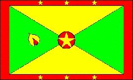

Granada
|  |
Información general
Nombre oficial: Granada
Área: 344 km²
Costas: 121 km
División política:8 distritos municipales
- Carriacou
- Petite Martinique
- St. Andrew
- St. David
- St. George
- St. John
- St. Mark
- St. Patrick
- y la capital St. George's
Unidad monetaria: Dólar Caribe-Este
1 Dólar Caribe-Este = 100 centavos
Idiomas: Inglés (oficial), patois del francés (no oficial)
Fiesta nacional: 7 de febrero, Día de la Independencia
Gentilicio: Granadino
Hora oficial: GMT -4 horas (normal/verano)
Miembro de: ONU, OEA, CARICOM, Commonwealth
Curiosidades
Granada es famosa por su producción de especias y principalmente de nuez moscada.
Granada es la menor nación independiente del hemisferio occidental.
Perfil Ecónomico
Perfil Demográfico
Población: 103.000 hab.
Densidad de población: 304,4 hab/km²
Perfil Cultural
Alfabetismo: 85%
Religión:
- Católicos: 65,6%
- Anglicanos: 19,0%
- Protestantes: 12,5%
- Protestantes marginales 0,9%
- Musulmanes: 0,3%
- No religiosos: 0,2%
- Bahaístas: 0,1%
- Otros: 1,4%
Sistema de Gobierno
Constitución vigente: 1974 (suspendida tras el golpe de 1979 y restablecida en 1984)
Sistema ejecutivo:
Monarca británico (representado por el Gobernador General) es Jefe de Estado, pero el Primer Ministro, responsable ante el Parlamento, es quien gobierna.
Sistema legislativo: Senado (trece miembros designados) y Cámara de Representantes (quince miembros elegidos por sufragio para un término de cinco años).
Sistema judicial: Corte Suprema, corte compuesta por la Corte Superior y la Corte de Apelaciones.
Aproximación histórica
La isla de Granada situada al este de las Antillas es de origen volcánico y tiene forma oval. El país incluye también las islas más meridionales de la cadena de las Granadinas, entre ellas Carriacou. Granada está recorrida de norte a sur por una cadena montañosa, cuyo punto más alto es el pico St. Catherine con 840 m. Existen riachuelos de curso corto y en la costa hay un lago el Gran Estanque, en el cráter de un volcán apagado.
Granada fue avistada por Cristóbal Colón en 1496. En 1650 el gobernador francés de Martinica compra Granada e implanta una colonia francesa con el nombre de Saint George. En 1672 es incorporada a la corona francesa hasta 1762, cuando tropas británicas conquistan la isla.
En 1974 Granada conquista la independencia pero se mantiene dentro de la Comunidad Británica. En 1979 una alianza de izquierda dirigida por Maurice Bishop instala un gobierno revolucionario en la isla, tras derrocar a Eric Gairy famoso por la represión con que gobernaba. El régimen revolucionario establece relaciones con Cuba y entra en choque con E.U. Divergencias internas provocan un golpe y Bishop es fusilado. Tropas estadounidenses ocupan el país hasta 1985. En 1984 se realizan elecciones generales. Los responsables del fusilamiento de Bishop son condenados a muerte en 1986, pero la ejecución es aplazada indefinidamente en 1990. Nicolás Brathawaite ocupa el poder hasta 1995 y el país enfrenta elevados índices de desempleo que llevan a buena parte de la población a emigrar al Reino Unido o E.U.
«-- ir al comienzo
«-- regresar